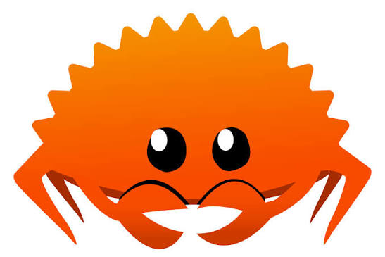
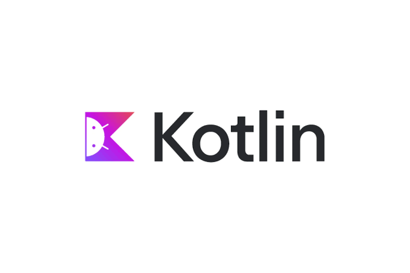

Rust es un lenguaje de programación moderno creado por Graydon Hoare y presentado públicamente en 2010. Está diseñado para ofrecer un alto rendimiento y seguridad en el manejo de la memoria.

Go, también conocido como Golang, fue creado por Google y presentado en 2009. Es un lenguaje sencillo y eficiente que se utiliza principalmente para desarrollar servidores, aplicaciones de red y sistemas distribuidos.

Kotlin es un lenguaje moderno creado por JetBrains y presentado en 2011. Es muy utilizado para desarrollar aplicaciones Android y también puede utilizarse para crear aplicaciones web, de escritorio y servidores.